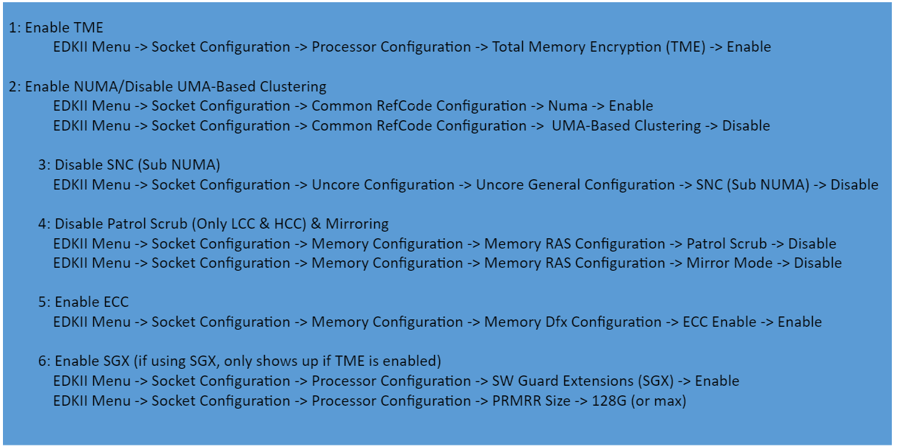
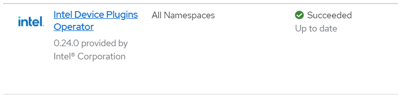

Intel® Device Plugins Operator for Red Hat OpenShift Container Platform
Table of Contents
Introduction
The Intel Device Plugins Operator for OpenShift Container Platform is a collection of device plugins advertising Intel specific hardware resources to the kubelet. It provides a single point of control for Intel® Software Guard Extensions (Intel® SGX), Intel GPUs, Intel® QuickAccess Technology (Intel® QAT), Intel® Data Streaming Accelerator (Intel® DSA), and Intel® In-Memory Analytics Accelerator (Intel® IAA) devices to cluster administrators. The v0.24.0 release of the operator only supports Intel SGX and Intel QAT device plugins. GPU, Intel DSA, Intel IAA, and other device plugins will be supported in future releases.
Minimum Hardware Requirements
Intel SGX Enabled Server
Third Generation Intel® Xeon® Scalable Platform, code-named “Ice Lake” or later
Configure BIOS using below details  [Note: The BIOS configuration shown above is just for the reference. Please contact your BIOS vendor for details]
Installation
Prerequisites
Make sure Red Hat OpenShift Cluster is ready to use and the developing machine is RHEL and
occommand is installed and configured properly. Please note that the following operation is verified on Red Hat OpenShift Cluster 4.11 and working machine RHEL-8.6Install the
occommand to your development machineFollow the link to install NFD operator (if it’s not already installed).
Note: Please only install the NFD operator and use steps below to create the NodeFeatureDiscovery instance.Create the NodeFeatureDiscovery instance
$ oc apply -f https://raw.githubusercontent.com/intel/intel-device-plugins-for-kubernetes/v0.24.0/deployments/nfd/overlays/node-feature-discovery/node-feature-discovery-openshift.yaml
Create the NodeFeatureRule instance
$ oc apply -f https://raw.githubusercontent.com/intel/intel-device-plugins-for-kubernetes/v0.24.0/deployments/nfd/overlays/node-feature-rules/node-feature-rules-openshift.yaml
Deploy SELinux Policy for OCP 4.10 -
The SGX device plugin and Init container run as a labelcontainer_device_plugin_tandcontainer_device_plugin_init_trespectively. This requires a custom SELinux policy to be deployed before the SGX plugin can be run. To deploy this policy, run$ oc apply -f https://raw.githubusercontent.com/intel/user-container-selinux/main/policy-deployment.yaml
Install Operator using OpenShift Web Console
In OpenShift web console navigate to Operator -> OperatorHub
Search for Intel Device Plugins Operator -> Click Install

Verify Operator installation
Go to Operator -> Installed Operators
Verify the status of operator as Succeeded
Click Intel Device Plugins Operator to view the details

Deploying Intel Device Plugins
Intel SGX Device Plugin
Follow the steps below to deploy Intel SGX Device Plugin Custom Resource
Go to Operator -> Installed Operators
Open Intel Device Plugins Operator
Navigate to tab Intel Software Guard Extensions Device Plugin
Click Create SgxDevicePlugin -> set correct parameters -> Click Create OR for any customizations, please select
YAML viewand edit details. Once done, click CreateVerify CR by checking the status of DaemonSet
intel-sgx-pluginNow
SgxDevicePluginis ready to deploy any workloads